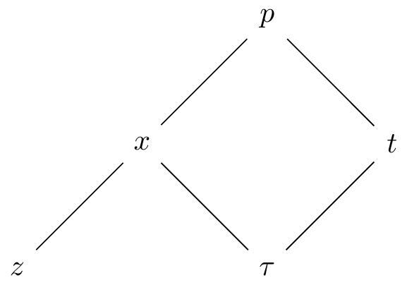
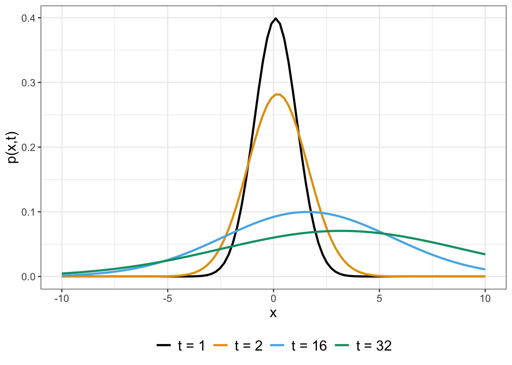

27 Solutions to Stochastic Differential Equations
Chapters 25 and 26 simulated SDEs. Visualizing the ensemble average of solution trajectories revealed a distribution of solutions that evolves in time. This final chapter examines methods to characterize exact solutions to stochastic differential equations by developing formulas to characterize the evolution of the distribution of solutions in time. There are a lot of mathematics here that can be a stepping stone for further study in the field of stochastics. Let’s (for one last time) get started!
27.1 Meet the Fokker-Planck equation
Let’s start with a general way to express a stochastic differential equation:
\[ dx = a(x,t) \; dt + b(x,t) \; dW(t) \tag{27.1}\]
The “solution” to this SDE will be a probability density function \(p(x,t)\), describing the evolution of \(p(x,t)\) in both time and space. Based on our work with Brownian motion in Chapters 25 and 26, the probability density function \(p(x,t)\) should have the following properties:
- \(E[p(x,t)]\) is the deterministic solution to \(\displaystyle \frac{dx}{dt} = a(x,t)\).
- The variance \(\sigma^{2}\) incorporates the function \(b(x,t)\).
A way to determine the probability density function is by solving the following partial differential equation, termed the Fokker-Planck Equation (Equation 27.2).
\[ \frac{\partial p}{\partial t} = - \frac{\partial}{\partial x} \left(p(x,t) \cdot a(x,t) \right) + \frac{1}{2}\frac{\partial^{2} }{\partial x^{2}} \left(\; p(x,t) \cdot (b(x,t))^{2} \;\right) \tag{27.2}\]
We can write Equation 27.2 in shorthand, dropping the dependence of \(x\) and \(t\) for \(p(x,t)\), \(a(x,t)\) and \(b(x,t)\): \(\displaystyle p_{t} = - (p \cdot a)_{x} + \frac{1}{2} (p \cdot b^{2})_{xx}\). We do not include the derivation of the Fokker-Planck Equation here, as the proof requires concepts from advanced calculus (see Logan and Wolesensky (2009) for more discussion and derivation of the Fokker-Planck equation). However, let’s build up understanding of Equation 27.2 through some examples.
27.1.1 Diffusion (again)
Consider the SDE \(dx = dW(t)\) with \(x(0)=0\) and apply the Fokker-Planck equation to characterize the solution \(p(x,t)\). We know from Chapter 24 that SDE \(dx = dW(t)\) characterizes Brownian motion. When we compare this SDE to the Fokker-Planck equation and Equation 27.1, we have \(a(x,t)=0\) and \(b(x,t)=1\), yielding Equation 27.3:
\[ p_{t} = \frac{1}{2} p_{xx}. \tag{27.3}\]
This equation should look familiar - it is the partial differential equation for diffusion (Equation 24.2)!1 The solution to this SDE is given by Equation 27.4. Figure 27.1 shows the evolution of \(p(x,t)\) in time.
\[ p(x,t) = \frac{1}{\sqrt{2 \pi t}} e^{-x^{2}/(2 t)} \tag{27.4}\]
One way to describe Equation 27.4 is a normally distributed random variable, with \(E[p(x,t)]=0\) and \(\sigma^{2}\) (the variance) equal to \(t\). Notice how the mean and variance for Equation 27.4 connect back to our previous work with random walks and diffusion in Chapters 23 and 24. Namely, simulations and random walk mathematics showed that the expected value of a random walk or Brownian motion was zero and the variance grew in time, which is the same for this SDE.
Let’s discuss the initial condition for Equation 27.4. Our SDE had the initial condition \(x(0)=0\). How this initial condition translates to Equation 27.4 is that \(x(0)\) is the same as \(p(x,0)\). For this example the initial condition \(p(x,0)\) is a special function called the Dirac delta function, written as \(p(x,0)=\delta(x)\). The function \(\delta(x)\) is a special type of probability density function, which you may study in a course that explores the theory of functions. Applications of the Dirac delta function include modeling an impulse (such as the release of a particle from a specific point) and watching its evolution in time.
27.1.2 Diffusion with drift
Now that we have a handle on the SDE \(dx = dW(t)\), let’s extend this next example a little more. Consider the SDE \(dx = r \; dt + \sigma \; dW(t)\), where \(r\) and \(\sigma\) are constants. As a first step, let’s examine the deterministic equation: \(dx = r \; dt\), which has a linear function \(x(t) = rt + x_{0}\) as its solution.2 As before, the initial condition for this SDE is \(p(x,0)=\delta(x)\).
Applying Equation 27.2 to this SDE we obtain Equation 27.5:
\[ p_{t} = -r \, p_{x}+ \frac{\sigma^{2}}{2} \, p_{xx} \tag{27.5}\]
Equation 27.5 is an example of a diffusion-advection equation. Amazingly through a change of variables we will reduce Equation 27.5 to an example of Equation 27.4. Here’s how to do this:
- First, let \(x=z+r \, \tau\) and \(t=\tau\). This change of variables may seem odd, but our goal here is to write \(p(x,t)=p(z,\tau)\) and to develop expressions for \(p_{\tau}\) \(p_{z}\), and \(p_{zz}\) from this change of variables. But in order to do that, we will need to apply the multivariable chain rule (see Figure 27.2).

- By the multivariable chain rule we can develop expressions for \(p_{\tau}\) and \(p_{z}\):
\[ \begin{split} \frac{\partial p}{\partial \tau} & = \frac{\partial p}{\partial x} \cdot \frac{ \partial x}{\partial \tau} + \frac{\partial p}{\partial t} \cdot \frac{ \partial t}{\partial \tau} \\ \frac{\partial p}{\partial z} & = \frac{\partial p}{\partial x} \cdot \frac{ \partial x}{\partial z} \end{split} \]
- Now let’s consider the partial derivatives \(\displaystyle \frac{\partial x}{ \partial \tau}\), \(\displaystyle \frac{\partial x}{ \partial z}\), and \(\displaystyle \frac{\partial t}{ \partial z}\). Remember that \(x=z+r \, \tau\). By direct differentiation \(x_{\tau} = r\) and \(x_{z} = 1\). Also since \(t=\tau\) then \(\tau_{t}=1\). With these substitutions, we can now re-write \(p_{\tau}\) and \(p_{z}\):
\[ \begin{split} \frac{\partial p}{\partial \tau} & = \frac{\partial p}{\partial x} \cdot \frac{ \partial x}{\partial \tau} + \frac{\partial p}{\partial t} \cdot \frac{ \partial t}{\partial z} = \frac{\partial p}{\partial x} \cdot r + \frac{\partial p}{\partial t} \cdot 1 \\ \frac{\partial p}{\partial z} & = \frac{\partial p}{\partial x} \cdot \frac{ \partial x}{\partial z} = \frac{\partial p}{\partial x} \cdot 1 \rightarrow \frac{\partial^{2} p}{\partial z^{2}} = \frac{\partial^{2} p}{\partial x^{2}} \end{split} \tag{27.6}\]
- Finally if re-write Equation 27.5 with the variables \(z\), \(\tau\), and the change of variables (Equation 27.6) we obtain Equation 27.7.
\[ \begin{split} \underbrace{p_{t} + r p_{x}} &=\frac{\sigma^{2}}{2} p_{xx} \\ p_{\tau} &= \frac{\sigma^{2}}{2} p_{zz} \end{split} \tag{27.7}\]
All this work and transformation of variables to obtain Equation 27.7 yielded a diffusion equation in the variables \(z\) and \(\tau\)! Applying Equation 27.4 with the variables \(z\) and \(\tau\), we have \(\displaystyle p(z, \tau) = \frac{1}{\sqrt{2 \pi \sigma^{2} \tau}} e^{-z^{2}/(2 \sigma^{2} \tau)}\), which we then transform back into the original variables \(x\) and \(t\) (Equation 27.8):
\[ p(x, t) = \frac{1}{\sqrt{2 \pi \sigma^{2} t}} e^{-(x-rt)^{2}/(2 \sigma^{2} t)} \tag{27.8}\]
Now that we have an equation, next let’s visualize the solution. Let’s take a look at some representative plots in Figure 27.3:

Based on what we know of this distribution, it should look like a normal distribution with mean (expected value) equal to \(rt\) and variance equal to \(\sigma^{2}t\). What the mean and variance tell us is that the mean is shifting and growing more diffuse as time increases. Remember that our solution to the deterministic equation was linear, and the mean of our distribution grows linearly as well! Also notice in Figure 27.3 as \(t\) increases the solution drifts (“advects”) to the right.
27.2 Deterministically the end
The examples in this chapter scratch the surface of developing a deeper understanding of stochastic processes and differential equations. Even though we looked at a few test cases, there is a lot of power in understanding them (and integration across much of the mathematics you may have learned). Stochastic differential equations and stochastic processes are a fascinating field of study with a lot of interesting mathematics - I hope what you learned here will make you want to study it further!
27.3 Exercises
Exercise 27.1 Consider the SDE \(dx = dW(t)\) with initial condition \(x(0)=2\). Using the results from this chapter, what is the solution \(p(x,t)\) for this SDE?
Exercise 27.2 What is the solution to the SDE \(\displaystyle dX = 0.2 \; dt + dW(t)\) with initial condition \(X(0)=0\)? Plot a few sample profiles (in \(X\)) of \(p(X,t)\) at different times. Using your solution, what is E\([p(X,t)]\) (expected value) and \(\sigma^{2}\) (variance)?
Exercise 27.3 Let \(S(t)\) denote the cumulative snowfall at a location at time \(t\), which we will assume to be a random process. Assume that probability of the change in the cumulative amount of snow from day \(t\) to day \(t+\Delta t\) is the following:
| change | probability |
|---|---|
| \(\Delta S = \sigma\) | \(\lambda \Delta t\) |
| \(\Delta S = 0\) | \(1- \lambda \Delta t\) |
The parameter \(\lambda\) represents the frequency of snowfall and \(\sigma\) the amount of the snowfall in inches. For example, during January in Minneapolis, Minnesota, the probability \(\lambda\) of it snowing 4 inches or more is 0.016, with \(\sigma=4\). (This assumes a Poisson process with rate = 0.5/31, according to the Minnesota DNR.) The stochastic differential equation generated by this process is \(dS = \lambda \sigma \; dt + \sqrt{\lambda \sigma^{2}} \; dW(t) = .064 \; dt + .506 \; dW(t)\).
- What is the Fokker-Planck equation for the probability distribution \(p(S,t)\)?
- What is the solution \(p(S,t)\) for the Fokker-Planck equation?
- What are \(E[p(S,t)]\) and the variance of \(p(S,t)\)?
- Generate representative plots of the solution as it evolves over time.
Exercise 27.4 A particle is moving in a gravitational field but is still allowed to diffuse randomly. In this case the stochastic differential equation is \(dx = -g \; dt + \sqrt{D} \; dW(t)\), where \(g\) and \(D\) are constants.
- What is the Fokker-Planck partial differential equation for the probability distribution \(p(x,t)\)?
- Based on the work done in this chapter, what is the equation for the probability distribution \(p(x,t)\)?
Exercise 27.5 Consider the stochastic differential equation \(\displaystyle dS = \left( 1 - S \right) \; dt + \sigma \; dW(t)\), where \(\sigma\) controls the amount of stochastic noise.
- First let \(\sigma = 0\) so the equation is entirely deterministic. Classify the stability of the equilibrium solutions for this differential equation.
- Still let \(\sigma = 0\). Apply separation of variables to solve this differential equation.
- Now let \(\sigma = 0.1\). Do 100 realizations of this stochastic process, with initial condition \(S(0)=0.5\). What do you notice?
- Now try different values of \(\sigma\) larger and smaller than 0.1. What do you notice?
- What is the Fokker-Planck partial differential equation for the probability distribution \(p(S,t)\)?
Logan, J. David, and William Wolesensky. 2009. Mathematical Methods in Biology. 1st ed. Hoboken, N.J: Wiley.
To remind you, the solution to \(p_{t} = D p_{xx}\) is \(\displaystyle p(x,t) = \frac{1}{\sqrt{4 \pi Dt} } e^{-x^{2}/(4 D t)}\). So in this case \(D = 1/2\).↩︎
This example is similar to the SDE \(\displaystyle dX = 0.2 \; dt + dW(t)\) in Chapter @ref(simul-stoch-26), where \(r=0.2\) and \(\sigma = 1\). In that example we found that the variance \(\sigma^{2}\) grew linearly in time.↩︎